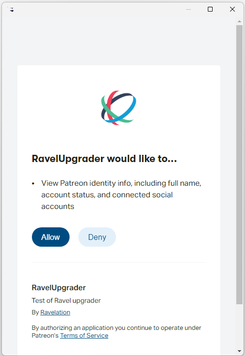

Once you are a member of Ravel's Patreon group, you have access to the Ravelation Patreon store, and you can download the latest copy of Minsky—either from the store or from attachments to posts announcing updated versions.
Download and install Minsky, which will launch the program once it is installed. Then choose ``Upgrade'' from the File menu. The RavelUpgrader form will pop up, asking you for confirmation that you are willing to let the process check your name and account details on Patreon.

Click on ``Allow'' and Minsky will check that you are a member, and if so then download and install the Ravel extension into Minsky. Once this is completed, the latest version of Ravel will be installed in your Minsky subdirectory, and you will have full access to its commands.